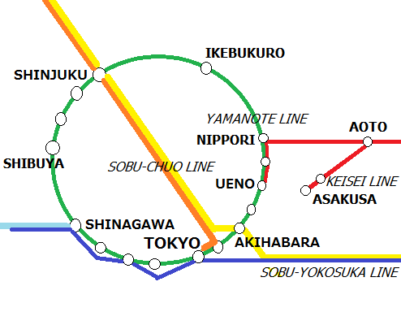

The railway network map of Tokyo area is huge, with more than 1,500 stations. Below is a link to probably the Most Complete Railway Map of Metropolitan Tokyo by JR East company. Shinkansen (bullet train) toward the West, which is run by JR Central company, is NOT on this map.
Railway Map of Metropolitan Tokyo (PDF file)
On this map, JR lines are represented by thick lines in black & white zebra pattern. It is a widely used convention.
Where are Narita and Haneda Airports?
Narita Airport near the lower right end, and Haneda Airport is at center bottom, marked as airplane icons.
Yamanote Line
Yamanote Line is the most important line in Tokyo. It is a big circle above Haneda airport with the most of important stations. Interesting venues are usually within a walking distance from them.
Yamanote line trains run every 3-10 minutes in both directions - clockwise and counter-clockwise, therefore people don't worry about the timetables except for the last train toward home at around midnight, which they definitely don't want to miss.
Yamanote line stations include (Clockwise from Tokyo):
Tokyo - Business / Imperial Palace / Shinkansen
Shinagawa - Shinkansen / Junction to the West (Yokohama, Kamakura)
Shibuya - Fashion / Young Crowd
Shinjuku - Skyscrapers / All-night drinking zone
Ueno - Junction to the East/North (Ibaraki, Fukushima)
Ikebukuro - Junction to the East/North (Nagano, Nigata, Fukushima)
Akihabara - Anime / Electronics
Some interesting places are NOT on Yamanote line, though:
Odaiba - An urbanized island, a few kilometers away. Odaiba needs a separate page to cover it...(TBD) Hint: take Yurikamome 'train' (without a driver!) from Shimbashi station running through the bridge over the sea, or hop on a boat from Hinode Pier near Hamamatsucho station of Yamanote line.
Asakusa - Old town. Use Ginza line of Tokyo Metro or TOEI Asakusa subway line
Roppongi - Most popular bar/club area among expats, including Hard Rock Cafe, for example. Finding an English-speaking bar/club anywhere is never easier anywhere than here. More active on night than day. Only subway access.
Destinations of Yamanote Line Trains
Every train has a destination except for Yamanote Line which runs in circles.
When you are looking for the platform of your Yamanote train, you may find these signs at the station: 外回り 'Sotomawari' - means outer = clockwise. 内回り 'Uchimawari' - means inner = counter-clockwise.
(Remember, cars and trains run on the left in Japan.)
You may find the knowledge of above Japanese characters useful for finding your track.
Trains to/from Narita Airport
Narita Airport is indicated by an airplane symbol in a square, near the right end.
Narita Airport is actually in Chiba Prefecture, not Tokyo. Sobu-Yokosuka Line of JR East train company connects Narita Airport and Tokyo station, and runs further to the west. Keisei Line, indicated by red lines, connects Narita Airport and Ueno, Nippori and Asakusa stations.
Note that the line COLOR changes from RED to PURPLE at Oshiage station, a few stops before Asakusa. This is because the purple interval is actually Asakusa Line of TOEI Subway company. But don't worry - the train just goes through Oshiage station and only changes operator companies.
Trains to/from Haneda Airport
Haneda Airport is indicated by an airplane symbol in a square, at center bottom of the route map.
Haneda Airport is in Tokyo. Find the Keikyu Main Line in light blue color on the map, going through Shinagawa station to the west. The first branch is Keikyu Airport Line which goes to Haneda Airport.
Most trains to Haneda Airport run through the two lines seamlessly, so you don't need to transfer. Trains from Haneda Airport go in both directions from the Keikyu Kamata station.
Yokohama, Kamakura, Yokosuka
Actually, JR Sobu-Yokosuka train from Narita Airport go straight to Yokosuka through Yokoahma and Kamakura. In case you want to go straight to these destinations, this is the most recommended way. after a stop at Shinagawa station of Yamanote Line, the train arrives at Yokohama station in a matter of 10 minutes or so.
Some Keisei Line trains also operate through Toei Asakusa Line and Keikyu line until they reach Yokosuka, via Yokohama station.
Prepaid IC card ticket SUICA/PASMO
I'd recommend buying a prepaid IC card, SUICA or PASMO, which will make your travel in Tokyo much easier and faster. Fares are also cheaper with SUICA/PASMO. JR East issues SUICA/PASMO card which is functionally 100% the same as SUICA/PASMO. You can return SUICA/PASMO for refund at any time.
You can use SUICA/PASMO for essentially any train or bus around central Tokyo (I cannot recall any exceptions), but NOT for Shinkansen (bullet train).
Child/Infant/Senior
The following rule has exceptions, so consult with the staff.
Basically up to two babies (0 years old) or infants (1-5 years old) per adult can travel free of charge, except if you are traveling in a 'group' such as a 'packaged tour'. The base fare for a child is about half of adult fare. Up to two infants per 'adult' or 'child' are free of charge. There is no discount for seniors.
Child and infant are determined by age as follows:
Less than 1 year old ― baby
1 - 5 years old ― infant
6 years old, until March 31st ― infant
6 years old, from April 1st ― child (school year in Japan begins).
7 - 11 years old ― child
12 years old, until March 31st ― child
12 years old, from April 1st ― adult (end of school in Japan).
You can buy an IC card for a child at a ticket office or a using a ticket machine at a train station. For further details ask station staff
Train Operators
Most of long distance trains in Japan are run by JR group companies, which used to be state-owned JNR (Japan National Railways). Today they are divided into seven railway companies by regions. East Japan Railway Company, often referred to as JR East, operates in the eastern part of Honshu including Tokyo, although Tokaido-Shinkansen (bullet train from Tokyo to Osaka via Kyoto) is operated by Central Japan Railway Company (referred to as JR Tokai).
For subway, there are two companies:
TOEI subway line is operated by Tokyo ('TOEI' in Japanese means 'operated by Tokyo')
Tokyo Metro subway line is operated by Tokyo Metro Co., Ltd.
For overground rail, there are seven private railway companies:
Keisei - connects Narita airport and Ueno/Asakusa. Keisei trains operate directly with TOEI Asakusa line and Keikyu line, which means that You can have a ride from Narita to Haneda or Yokohama without transfer.
Keikyu - connects Haneda and Yokohama, Haneda and Shinagawa, Haneda and Asakusa, and so on.
Tokyu - the major line connects Shibuya and Yokohama. Many branches run through residential areas.
Tobu - connects Ikebukuro/Asakusa and Nikko. This is a reasonable choice when you visit Nikko.
Seibu - connects Shinjuku/Ikebukuro and northwestern residential towns of Tokyo.
Odakyu - connects Shinjuku and Odawara.
Keio - connects Shinjuku/Shibuya and northwestern residential towns of Tokyo.
Connection between Multiple Train Operators
If you are traveling from Narita to Yokohama, the train route map may seem to be telling you that you will have to take three lines: Keisei Line, Toei Asakusa Line and Keikyu Line. So will you have to change two times? No. They interoperate just like one line, so you may not even notice where the name of line changed. But not all lines interoperate. JR and Keisei don't. There are many train companies which interoperate with another, but I will not enumerate all of them here. With a prepaid IC card ticket, you can avoid buying a ticket for each line. When you exit at the gate, your fare will be automatically calculated, no matter if your trains inteoperate train wagons or run on separate tracks.